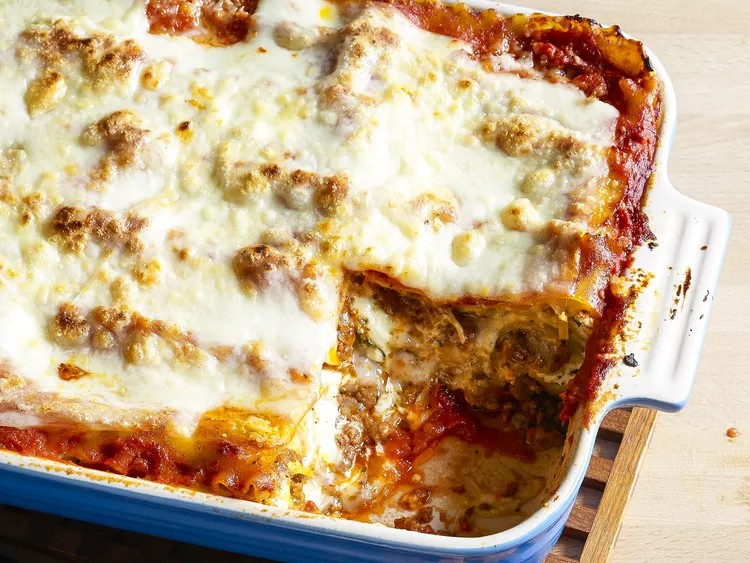

Lasagna

Description
Making lasagna can be time-consuming, but the results are well worth the wait. You'll find a detailed ingredient list and step-by-step instructions in the recipe below, but let's go over the basics:
Ingredients
- 1 pound ground beef
- 1/2 Onion and two cloves of garlic
- 1/2 large bell pepper, diced
- One can of crushed tomatoes, two cans of tomato sauce and two cans of tomato paste
- 3 ounces tomato paste
- 2 tablespoons chopped fresh oregano, or 2 teaspoons dried oregano
- Two tablespoons of white sugar
- 1 pinch garlic powder and/or garlic salt
- 1 tablespoon red or white wine vinegar
- Fresh parsley, dried basil leaves, salt, italian seasining, fennel seeds and black pepper
- Lasagna noodels
- Parmesan, mozzarella and ricotta cheese
- One egg
To assemble the lasagna
- 1/2 pound dry lasagna noodles (requires 9 lasagna noodles - unbroken)
- 15 ounces ricotta cheese
- 1 1/2 pounds (24 ounces) mozzarella cheese, grated or sliced
- 1/4 pound (4 ounces) freshly grated Parmesan cheese
Method
- Put pasta water on to boil:
Put a large pot of salted water (1 tablespoon of salt for every 2 quarts of water) on the stovetop on high heat. It can take a while for a large pot of water to come to a boil (this will be your pasta water), so prepare the sauce in the next steps while the water is heating.
- Brown the ground beef:
In a large skillet heat 2 teaspoons of olive oil on medium-high heat. Add the ground beef and cook until it is lightly browned on all sides.
Remove the beef with a slotted spoon to a bowl. Drain off all but a tablespoon of fat.
- Make the sauce:
Transfer the beef mixture to a medium-sized (3- to 4-quart) pot. Add the crushed tomatoes, tomato sauce, and tomato paste to the pot.
Add the parsley, oregano, and Italian seasonings, adjusting the amounts to taste. Sprinkle with garlic powder and/or garlic salt, to taste.
Sprinkle with red or white wine vinegar. Stir in sugar, a tablespoon at a time, tasting after each addition, to taste. (The amount of sugar needed will vary, depending on how acidic the tomatoes are that you are using.)
Add salt to taste, and note that you will later be adding Parmesan, which is salty.
Bring the sauce to a simmer and then lower the heat to maintain a low simmer. Cook for 15 to 45 minutes, stirring often. Scrape the bottom of the pot every so often so nothing sticks to the bottom and scorches.
Remove from heat.
- Boil and drain the lasagna noodles:
By now the salted water you started heating in step one should be boiling. Add the dry lasagna noodles and cook them to al dente, per package directions. (Note noodles may be cooked in advance.)
Stir often to prevent from sticking. Make sure that water remains at a full rolling boil during the entire cooking to prevent noodles from sticking.
When ready, drain in a colander and rinse with cool water, gently separating any noodles that may be sticking together.
Spread a little olive oil on a large rimmed baking sheet, and lay out the cooked noodles on this sheet, turning them over so that they get coated with a little of the olive oil. This will prevent them from sticking together.
- Preheat the oven to 185°C.
- Assemble the lasagna:
In a 20x30 CM casserole or lasagna dish, ladle a cup of sauce and spread it over the bottom of the dish. Arrange one layer of lasagna noodles lengthwise (about 3 long noodles, the edges may overlap, depending on your pan) over the sauce. Ladle a third of the remaining sauce over the noodles.
Sprinkle a layer of a third of the grated mozzarella on top of the lasagna sauce. Add half of the ricotta cheese, by placing cheese dollops every couple of inches. Sprinkle half the grated parmesan cheese evenly over the top of the ricotta cheese.
Apply the second layer of noodles and top it with half of the remaining sauce. Add half of the remaining mozzarella, the remaining ricotta cheese, and another the remaining Parmesan.
Finish with another layer of noodles. Spread the remaining sauce over the top layer of noodles and sprinkle with the remaining mozzarella cheese.
- Bake:
Cover the lasagna pan with aluminum foil, tented slightly so it doesn't touch the noodles or sauce). Bake at 375°F for 45 minutes. Uncover in the last 10 minutes if you'd like more of a crusty top or edges.
Serve with a good salad of your choice and enjoy your meal